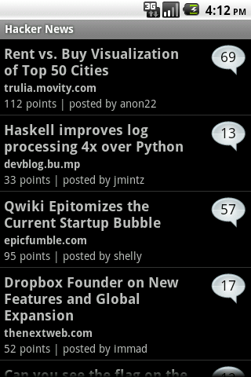
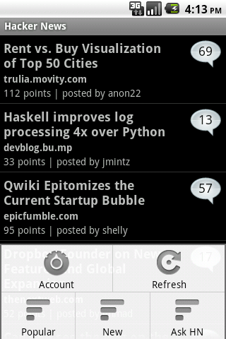
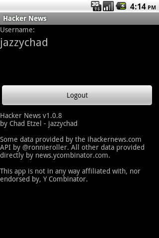
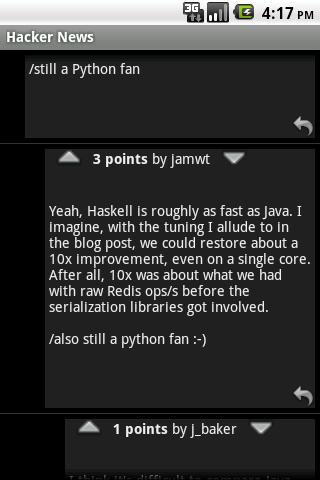
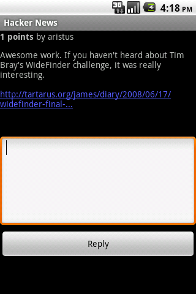

Hacker News for Android
Android Market QR Code:
 Or, Open in Android Market directly (link only works on android devices).
Hacker News is a full-featured (free!) Android client for the Hacker News website (news.ycombinator.com) - view the top stories, new submissions, and Ask HN posts. Login with your account to up/downvote and comment directly within the app. View articles in the browser or text-only on viewtext.org.
Please send feedback to: chad at jazzychad daught net
Or, Open in Android Market directly (link only works on android devices).
Hacker News is a full-featured (free!) Android client for the Hacker News website (news.ycombinator.com) - view the top stories, new submissions, and Ask HN posts. Login with your account to up/downvote and comment directly within the app. View articles in the browser or text-only on viewtext.org.
Please send feedback to: chad at jazzychad daught net
Screenshots

Front Page stories

Menu for choosing Popular, New, and Ask HN stories

Login to your HN account to enable voting and commenting

Threaded comments

Post replies to stories and comments